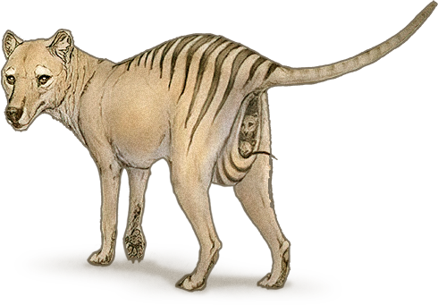
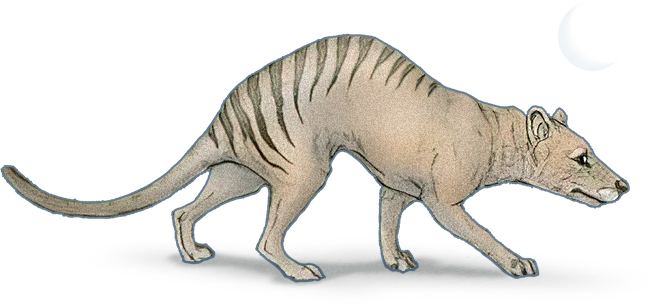
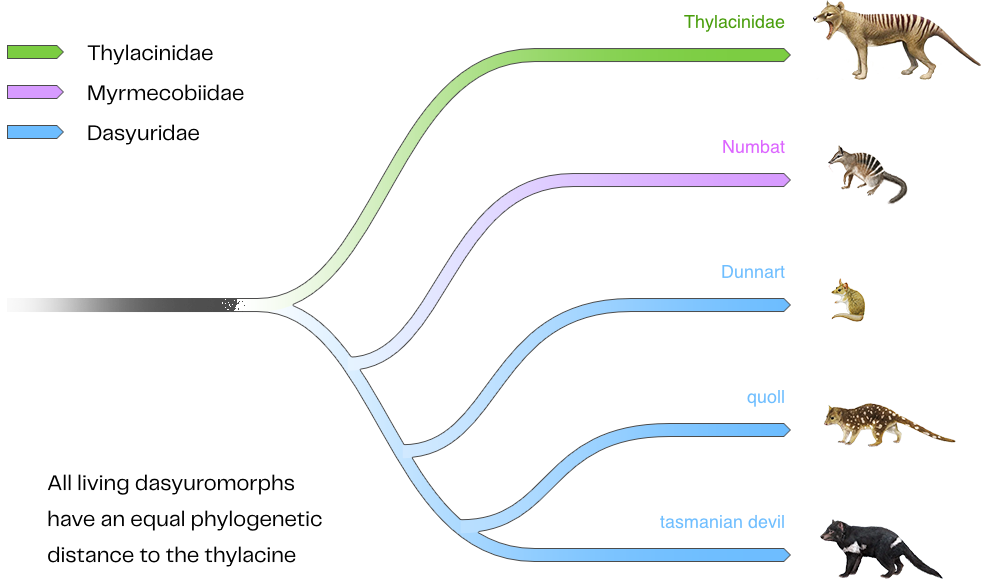
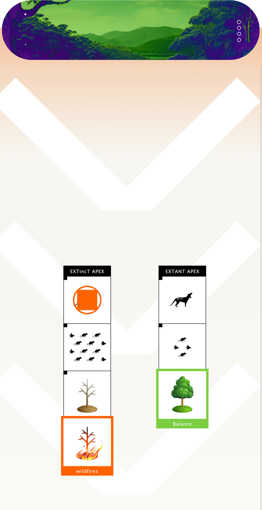
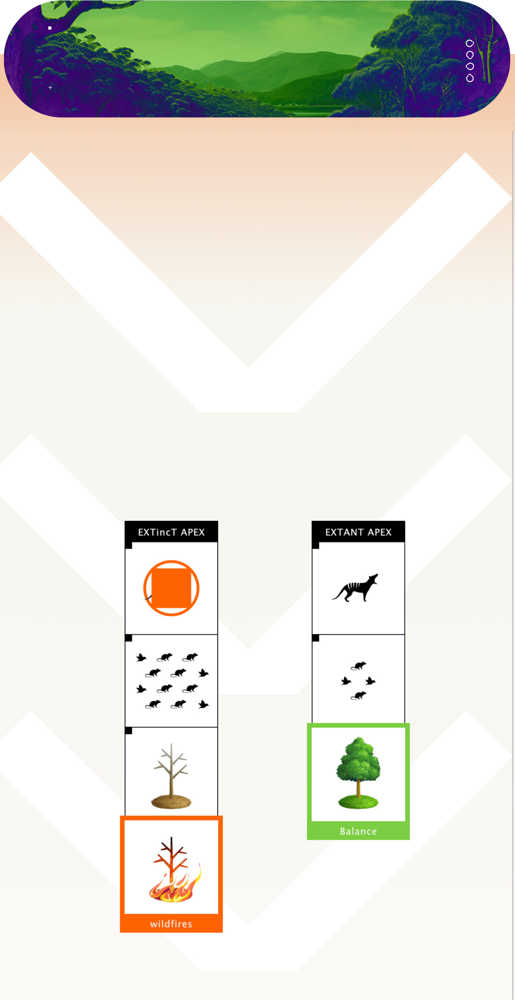
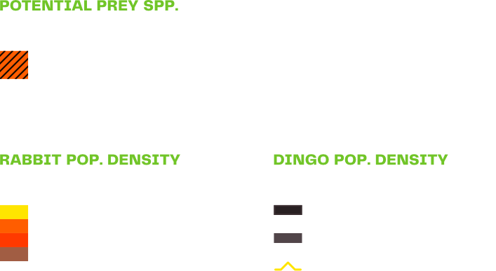
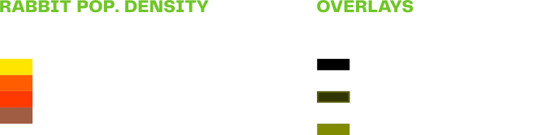
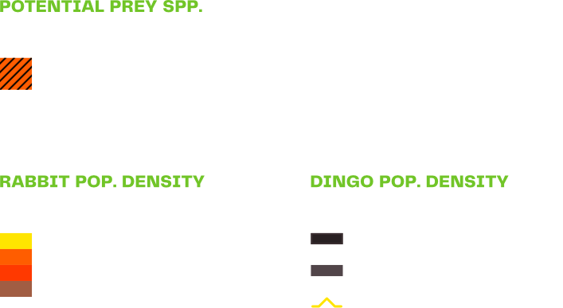
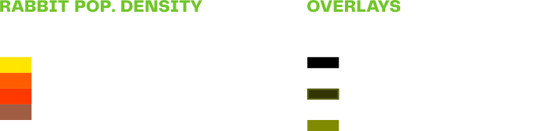
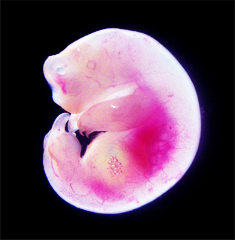

THYLACINE
A Marvel of Evolution
Thylacine. Tasmanian wolf or Tasmanian tiger. Whatever you call it, this mythically-beautiful carnivorous marsupial was a true masterpiece of biological advancement. Yet, the story of its extinction is a tragedy of human interference and aggression.
Colossal is determined to give the thylacine a second chance at life.

FROM 5000+ TO ZERO IN ONLY A FEW DECADES.
The last wild Tasmanian tiger was killed between 1910 and 1920.
The last captive specimen died in 1936. Colossal can change that.
 HUMAN-CAUSED
EXTINCTION
HUMAN-CAUSED
EXTINCTION
THE LAST WILD THYLACINE was killed
Between 1910 and 1920
We Are Now Determined to Reverse the Problem Humans Created.
There isn’t much room for debate when it comes to identifying the main cause of the thylacine’s extinction. The thylacine was wiped from existence by very determined efforts of European settlers to hunt and eradicate it. This was due to the thylacine’s nature as a carnivore, often feeding on livestock, and ultimately leading to its categorization as a pest animal.
So much so that in 1830, the Van Diemens Land Co. introduced a bounty on the thylacine. Several decades later in 1888, the Tasmanian Parliament placed an official bounty of 1 pound on thylacines, according to the Tasmania Parks and Wildlife Service.
These bounties led to a more lethal approach to controlling the thylacine problem, and as the hunting efforts increased, the numbers dwindled rapidly. The thylacine was forced off its land and finally into extinction in September of 1936.
The Last Thylacine
In July of 1936 the Australian government granted the Thylacine species protection. However, this shift in public opinion and conservation awareness came too late. On September 7th, 1936, only two months after the species was granted a protected status, Benjamin, the last known thylacine, died from exposure at the Beaumaris Zoo in Hobart.
The de-extinction of the Thylacine will develop key technologies and resources which are critical to help preserve and conserve Australia’s extant marsupial species.
COMMEMORATIVE THYLACINE STAMPS
Australia released a series of stamps depicting the Thylacine beginning in the 1960s.
1912 - Tasmania
A Tasmanian farmer with a recently killed thylacine. Thylacines like this were aggressively hunted for eating the livestock of farmers and prospectors.
Thylacinus Cynocephalus
THYLACINE
Vitals
coastal scrublands, cool temperate rainforest.
Behavior, Characteristics & Evolutionary Traits
The Thylacine, or Tasmanian tiger, is a large carnivorous marsupial that officially went extinct in 1936. As the only member of the family Thylacinidae to survive into modern times, the sharply-clawed thylacine possessed a lean and athletic appearance with sandy yellowish-brown to gray fur and 15-20 distinct dark stripes across the back from shoulders to tail. Its canid-like skull and large jaws held 46 sharp teeth.
 The marsupial thylacine also had an abdominal pouch and is one of only two known marsupials to have pouches in both sexes. For males the pouch served as a protectvive sheath for reproductive organs, while for females, the pouch served as a carrying vessel for its young, as seen in modern day kangaroos. The average litter size was up to four and the young were dependent on the mother until they are at least half-grown.
 The thylacine was mostly nocturnal or semi-nocturnal, eating at night and sleeping in caves or hidden within thick tree clusters during the day. Thylacines were exclusively carnivores whose diet consisted of other marsupials, small rodents, lizards and birds. They were reported to have preyed on sheep and poultry after European colonization, although the extent of this was almost certainly exaggerated.
Exaggerated or not, this pest reputation clashed with farmers of the region, ultimately leading to their overhunting and eventual extinction in 1936.
SPECIES ORIGIN: 2 Million years ago
EXTINCTION: 1936
Thylacine Phylogenetic Tree
Dasyurids (Dasyuridae), are a family of carnivorous marsupials that are the closest living relatives of the Thylacine. They are 70 million years evolutionarily divergent from the Tasmanian tiger.
Dasyurids are easily distinguished from other Australian marsupials because they possess three pairs of incisors in the lower jaw, front feet with five toes, and hind feet with never less than four toes.
THYLACINE HABITAT
The Loss of an Apex Predator Disrupts an Ecosystem from the Top Down.
The thylacine was a visually stunning apex predator that roamed the forests and grasslands of the island of Tasmania, as well as the coastal areas of the southern Australia mainland. It was not particularly fast, nor did it have a strong jaw. Thus it persisted through stamina and smarts, feasting on small creatures, which also left it susceptible to even slight changes in habitat.
At the top of its own food chain, the thylacine played a significant role as a protector of environmental health for the regions it habited. Its role as apex meant that it helped remove the weak and the sick as well as kept the balance with competitors helping to ensure species diversity.
With the loss of an apex predator, a process known as Trophic Downgrading begins.


An Island Down UndeR
TROPHIC
DOWNGRADING
The causal degradation that occurs when apex predators are removed from an ecosystem; leading to a cascading effect down the food chain with ecological consequences on lower trophic level groups and systems.
Until recently, large apex consumers were ubiquitous across the globe and had been for millions of years. The loss of these animals may be humankind’s most destructive influence on nature. Research reveals extensive cascading effects of their disappearance in marine, terrestrial, and freshwater ecosystems worldwide.
The emergence of the Tasmanian Devil facial tumor disease is a specific evidentiary example of trophic downgrading resulting from the thylacine’s absence.
Drag the divider on the image above to view an AI simulation of the effects of trophic downgrading on the environment. The ecosystem on the right has its apex predators.
Consequences of Trophic Downgrading
- Proliferation of Disease
- Wildfires
- Decreased Carbon Sequestration
- Invasive Species
- Disruption of Biogeochemical Cycles
 

Colossal’s Solution:
WE HAVE THE DNA.
WE’re well on the
path to de-extinction.
While the last living thylacine died in 1936 in captivity at the Beaumaris Zoo in Hobart, Tasmania, many embryos and young specimens have been preserved in alcohol and other stabilizing fluids.
Andrew Pask, Phd.
Professor of Biosciences at University of Melbourne TIGRR Lab
[ COLOSSAL SCIENTIFIC ADVISORY BOARD MEMBER ]
Colossal’s Thylacine De-Extinction Division is directed by the world’s leading expert on thylacine recovery, Andrew Pask, Phd. Now serving on Colossal’s scientific advisory board and operating as the university partner lead, Dr. Pask practices as a Professor in Epigenetics in the School of Biosciences at the University of Melbourne.
“We are so excited for TIGRR to partner with Colossal on this journey. We both share the same vision and passion to de-extinct the thylacine. Working together, will enable us to make this a reality faster than we could have ever hoped. This partnership will drive the development of new technologies with immediate conservation applications for marsupials which are currently facing major ecological pressures as well as underpinning the de-extinction of the unique marsupial apex predator, the thylacine.”
Colossal’s Thylacine De-Extinction Division is directed by the world’s leading expert on thylacine recovery, Andrew Pask, Phd. Now serving on Colossal’s scientific advisory board and operating as the university partner lead, Dr. Pask practices as a Professor in Epigenetics in the School of Biosciences at the University of Melbourne.
Andrew Pask leads a team of genetic scientists at the TIGRR lab (Thylacine Integrated Genetic Restoration Research) that are attempting to make the concept of “de-extinction” a reality. He has published more than 100 papers on developmental genetics particularly using eutherian-marsupial comparisons, including a feature article in Nature Ecology and Evolution. For more than 20 years, his work has focused on sequencing the genome of the extinct thylacine.
Much like our efforts with the Woolly Mammoth, our efforts here are also supported by several decades worth of research and a world-renowned university - pushing science, biology and academia forward together. Around the TIGRR Lab, a favored slogan is “turning science fiction into science fact.”
OUR PROCESS
DE-EXTINCTION OF THE THYLACINE.
- Genome sequenced by Dr. Andrew Pask in 2018 from DNA extracted from 108-year-old specimen preserved at the Victoria Museum in Australia.
- Genome updated in April 2022.

- Generate high-quality reference genomes for all closest living relatives of the Thylacine to determine best fit for engineering.
- Build genotype to phenotype pipelines for marsupials to identify genes that will enhance the recipient host genome to become ‘Thylacine-like’.
- Establish compatible cell lines and iPSCs for de-extinction of Thylacine to be used in CRISPR editing, sequencing, stem cell derivation, gametogenesis, phenotypic assays and SCNT.
- Apply CRISPR and other genome engineering technologies to insert Thylacine genes into the genome of a Dasyurid.
- Use SCNT to transfer nucleus from Thylacine-like cell into a Dasyurid egg, followed by stimulation of embryonic growth.
- Push development of embryo until ready for transfer to surrogate.
- Implant fully formed embryo into surrogate.
- Embryo gestates for an additional period up to 42 days.
And the Final Step . . .
Maturation
& Birth
Scan 0023
>>>
rewilding the continentof AUSTRALIA
It All Begins With a Good Plan
Our work is not complete with the birth of the first de-extinct thylacine. In partnerships with universities, governments, wildlife preservations groups and more, we will focus on animal husbandry efforts to raise a healthy population in safe conditions. Then the rewilding efforts begin, and the planet begins to heal. Fortunately, the habitat in Tasmania has remained relatively unchanged, providing the perfect environment to re-introduce the thylacine and enabling it to reoccupy its niche.

Thylacine Rewilding Data
A series of mappings to help contextualize the potential reintroduction of Thylacinus cynocephalus
(Tasmanian tiger) in the Australian + Tasmanian environment.
Data Maps
Legend
 



MRI procedures used to internally visualize the internal organ and bone structures of preserved thylacine pup
DEVILs IN THE DETAILS
REWILDING PLAN:
Follow successful efforts underway with the Tasmanian Devil.
Australia’s fauna has been devastated by invasive predators introduced by European settlers, only recently exacerbated by forest fires killing nearly three billion animals. Today, Australia retains the world’s highest mammal extinction rate and ranks 6th worst in the world for number of species listed as endangered and critically endangered.
With a vision to rewild Australia, conservationists have looked to the Tasmanian devil. This apex predator, while keeping possum and wallaby populations in check, would drive out invasive foxes and cats, enabling native small mammals to recover. In parallel, it would enrich the soil, spread seeds, bury leaf litter, and minimize the buildup of flammable material – dampening the breadth of forest fires. Twenty-six healthy Tasmanian devils have been reintroduced to mainland Australia to date.
Rewilding of the Thylacine to its original habitat will help to stabilize the fragile ecosystem of the island of Tasmania.
Rewilding the Tasmanian devil to Australia is a quintessential example of the positive feedforward impacts of rewilding. Reintroducing Tasmanian devils will limit one of the very factors that had been precipitating broad mammalian extinction in Australia, notably excessive forest fires. Nature, provided a little rebalancing, has its own, wise way of harmonizing itself through feedback loops embedded within broad floral and faunal life cycles.
 Our efforts will lead to greater discoveries into marsupial species at large, laying the groundwork for establishing and optimizing the creation of marsupial cell lines and marsupial iPSCs. The standardization of marsupial biobanking will revolutionize the amount of scientific resources available to all extant species belonging to this non-model clade. The successful birth of the thylacine requires advancement of current marsupial assisted reproductive technology, leading to the development of gestation and maturation devices that can support any marsupial. This technology will be instrumental in the preservation of marsupials across the globe, which are highly concentrated on the continent with the fastest rate of loss of biodiversity.
This is a future
we can believe in
The
Fat-Tailed
DUnnart
A Surrogate for Hope
Fat-Tailed Dunnart
- Class: Mammalia
- Order: Dasyuromorphia
- Family: Dasyuridae
- Genus: Sminthopsis
- Region: Australia
- Avg. Length: 2.4 to 3.5” | 60 to 90 mm
- Avg. Weight: 0.3 to 0.71 oz | 10 to 20g
- Est. Current Population: Unknown
[ Status : Threatened ]
REVERSING TRAGEDY
In the history of extinction and survival, few stories compare to that of the thylacine. This apex predator, only just recently lost to the world, is a cautionary tale of how human interference, error and negligence can bring about the end of an entire species. Yet, through the lens of scientific innovation, Colossal reinforces the existence of hope.
Enter the fat-tailed dunnart, a tiny, mouselike marsupial which will play an extraordinary role in the thylacine’s de-extinction.
“We take DNA from existing species that are the closest relatives; in the case of the thylacine, it’s the fat-tailed dunnart.”
Ben Lamm
Colossal Co-founder
A NEAR PERFECT SOLUTION FOR AN IMPERFECT WORLD
Native to Australia, the fat-tailed dunnart plays a crucial role in Colossal’s plan to bring the Tasmanian tiger back from extinction. Though modest in size, this species is surprisingly resilient, adapted to a wide range of habitats and climates. And adaptability is non-negotiable for any animal that may serve as the host parent to a de-extinct species—making the fat-tailed dunnart a suitable candidate for the groundbreaking task ahead.
Australia has the highest mammal extinction rate in the world, having lost
since the beginning
of European settlement.
Collaboration
In a collaboration between the University of Melbourne and Colossal Biosciences, the genome of the fat-tailed dunnart is being sequenced and compared to that of the preserved thylacine DNA. The marvel of gene-editing technology will then be employed to align the dunnart's DNA more closely with that of the thylacine.
This intricate process culminates in the insertion of the modified cell nucleus into a fat-tailed dunnart egg, kickstarting embryonic growth using Colossal’s exo-dev (artificial womb) technology or in vitro fertilization (IVF) of a surrogate dunnart mother. Following birth, the thylacine joey will develop in our exo-pouch. The goal is to create a near-perfect genetic match to the thylacine, eventually marking the reemergence of a species once thought lost forever.
“Thylacines give birth to babies that are not much bigger than a grain of rice, so growing the embryo in a test tube or through a surrogate is much less challenging [for us] for a marsupial than a mammoth.”
Andrew Pask, TIGRR Labs
COMMITTED
TO
THE CAUSE
Colossal's technology aims to achieve an animal that is a near-perfect match to its original ancestor within the next decade. However, the long-term vision is even more ambitious—creating a healthy, sustainable, biodiverse future for all life on Earth.
Thus, as our team approaches the cusp of scientific history, we never lose sight of ethical and ecological considerations.

While Colossal continues to redefine the boundaries of what is scientifically possible, the role of the fat-tailed dunnart in resurrecting its long-lost relative underscores a symbiotic relationship that defines the complexity of our natural world. Let our unprecedented journey serve as a clarion call for both innovation and responsibility, shaping the legacy of biodiversity and conservation for the future.
CONSERVATION collaborators
“We are excited about the applications of these technologies in being able to conserve marsupial species that are on the brink of extinction before we lose them forever."
Barney Long, Ph.D.
Senior Director of Conservation Strategies for Re:wild.
“With many conservation projects across Australia and Tasmania, this particular project is near and dear to my heart. Seeing first-hand the rapid loss of biodiversity that Australia has been facing, it brings me great joy to support a company who is dedicated to not just preventing further extinction but also in some cases, reversing it.”
Kirstin Scholz
General Manager of WildArk
"Our family remains dedicated to supporting conservationist efforts around the world and protecting Australia's biodiversity is a high priority. The Tassie tiger's extinction had a devastating effect on our ecosystem and we are thrilled to support the revolutionary conservation efforts that are being made by Dr Pask and the entire Colossal team."
chris hemsworth
Actor/Activist & Colossal Investor
Credit WildArk of Chris and Elsa from their work with the Tasmanian Devil
Credit: National Geographic for Disney+
De-Extinct
the Thylacine
In partnership with the University of Melbourne, the restoration of this unique keystone species, which was hunted aggressively to extinction, holds promise of ecosystem restoration for Tasmania.